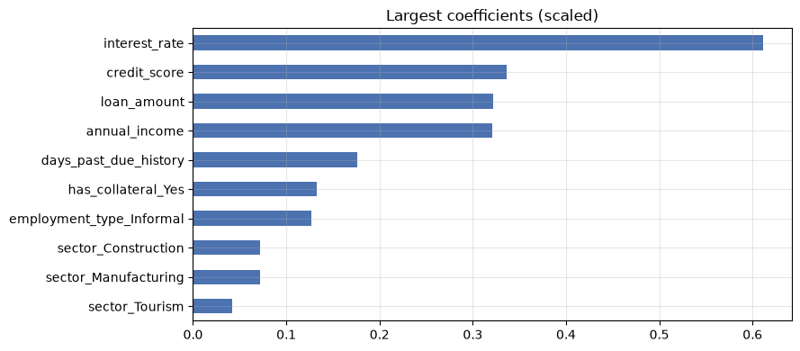
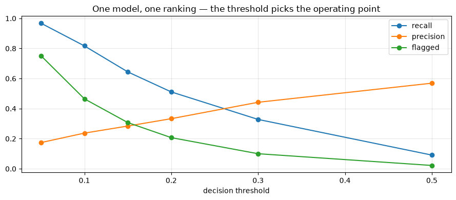

Feature Engineering
Applied ML in Production · Session 3
Session 2 left us with an honest model: leak removed, gaps imputed, AUC 0.78. This session asks the next question — can we give the model better columns?
Feature engineering is the work of turning what you know about the business into columns a model can use. A credit officer does not look at "loan amount" and "annual income" separately; they look at the ratio, because a 500,000 rupee loan means one thing to a business earning 2 million and another to a business earning 600,000. That ratio is not in the file. Someone has to put it there.
This is where domain knowledge beats algorithms on tabular data — and it is also where teams waste weeks building columns that turn out to be worth nothing. So we will do both halves of the job: build features, then measure whether they earned their place.
We finish with the 13.5% class imbalance we have been ignoring since session 1.
How to work through this
Type the code yourself. Every cell is short, and most of the work is one line of arithmetic on two columns you already have.
Run each cell, read the output, then read the commentary. If a cell errors, run from the top.
Learning objectives
After this session you will be able to:
- Create features of the five kinds that matter on tabular data: ratios, interactions, flags, aggregations, and date parts.
- Explain why a linear model cannot see an interaction unless you build it.
- Measure whether a new feature earned its place, instead of assuming it did.
- Select features with filter, wrapper, and embedded methods, and defend a smaller model.
- Handle a high-cardinality categorical column, and decide whether to keep it.
- Handle class imbalance with class weights, resampling, or a shifted threshold — and say which one changes what.
Setup
Same helper as before, plus one small function so we can score a feature set in one line and compare fairly.
%matplotlib inline
from pathlib import Path
import matplotlib.pyplot as plt
import numpy as np
import pandas as pd
from sklearn.linear_model import LogisticRegression
from sklearn.metrics import precision_score, recall_score, roc_auc_score
from sklearn.model_selection import train_test_split
from sklearn.preprocessing import StandardScaler
plt.rcParams.update({"figure.figsize": (9, 4), "axes.grid": True, "grid.alpha": 0.3})
pd.set_option("display.width", 120)
def find_data(filename="loan_default.csv"):
for folder in [Path.cwd(), *Path.cwd().parents]:
candidate = folder / "data" / filename
if candidate.exists():
return candidate
raise FileNotFoundError(f"could not find data/{filename}")
loans = pd.read_csv(find_data(), parse_dates=["application_date"])
y = loans["defaulted"]
print(f"{len(loans):,} applications, default rate {y.mean():.1%}")
12,000 applications, default rate 13.5%
def evaluate(features, label, threshold=0.5, balanced=True):
"""Encode, split, impute, scale, fit, score. Returns the fitted model."""
X = pd.get_dummies(features, drop_first=True).astype(float)
X_train, X_test, y_train, y_test = train_test_split(
X, y, test_size=0.25, stratify=y, random_state=42
)
medians = X_train.median()
X_train, X_test = X_train.fillna(medians), X_test.fillna(medians)
scaler = StandardScaler().fit(X_train)
model = LogisticRegression(
max_iter=1000, class_weight="balanced" if balanced else None
).fit(scaler.transform(X_train), y_train)
probabilities = model.predict_proba(scaler.transform(X_test))[:, 1]
predictions = (probabilities >= threshold).astype(int)
print(f"{label:<32} {X.shape[1]:>2} cols "
f"AUC {roc_auc_score(y_test, probabilities):.3f} "
f"recall {recall_score(y_test, predictions):.3f} "
f"precision {precision_score(y_test, predictions, zero_division=0):.3f}")
return model
1. Why a model needs help
A model can only combine the columns you give it. A linear model can only add them up — so any relationship that is not a weighted sum is invisible to it unless you build the column yourself.
Here is the smallest possible demonstration. Risk appears only when a loan is both large and short-term. Two features, one obvious rule.
rng = np.random.default_rng(0)
size = rng.uniform(1, 10, 4000) # loan size
term = rng.uniform(1, 10, 4000) # loan term
risky = ((size > 6) & (term < 4)).astype(int) # risky only when BOTH hold
toy = pd.DataFrame({"size": size, "term": term})
X_train, X_test, y_train, y_test = train_test_split(toy, risky, test_size=0.25, random_state=0)
plain = LogisticRegression(max_iter=1000, class_weight="balanced").fit(X_train, y_train)
print(f"raw columns only: precision {precision_score(y_test, plain.predict(X_test)):.3f}")
toy_plus = toy.assign(interaction=toy["size"] * (10 - toy["term"]))
X_train, X_test, y_train, y_test = train_test_split(toy_plus, risky, test_size=0.25, random_state=0)
better = LogisticRegression(max_iter=1000, class_weight="balanced").fit(X_train, y_train)
print(f"with interaction: precision {precision_score(y_test, better.predict(X_test)):.3f}")
raw columns only: precision 0.696
with interaction: precision 0.805
Same data, same algorithm, same rows. One extra column — "large loan combined with short term" — and precision jumps from 0.70 to 0.81.
The model did not get smarter. We stopped asking it to express something it cannot express.
That is the whole idea. The question for every project is which of these columns your business actually has, and the answer comes from the person who does the job by hand, not from the data.
2. The five kinds of feature you will build
| Kind | What it is | In this project |
|---|---|---|
| Ratio | One quantity relative to another | loan_amount / annual_income — debt burden |
| Interaction | Two features combined | large loan and short tenure |
| Flag | A yes/no fact pulled out of a number | "has ever been past due", "first-time borrower" |
| Aggregation | A summary over a group | average default rate of the branch, loans per customer |
| Date part | Something extracted from a timestamp | month, quarter, days since last loan |
Two cautions before we build.
Aggregations over the target leak. "Average default rate of this branch" computed over the whole dataset includes the row you are predicting. If you build one, it must be computed inside the training fold only — session 7.
Date parts teach the model when. A feature like "applied in Q4" can work beautifully until the next Q4 looks different. Use them deliberately, and read session 8 before you ship one.
features = loans[["loan_amount", "tenure_months", "interest_rate", "previous_loans",
"days_past_due_history", "annual_income", "credit_score",
"sector", "employment_type", "has_collateral"]].copy()
# Flags from session 2 — missingness was informative.
features["income_missing"] = features["annual_income"].isna().astype(int)
features["score_missing"] = features["credit_score"].isna().astype(int)
baseline_model = evaluate(features, "session 2 features")
session 2 features 18 cols AUC 0.782 recall 0.694 precision 0.275
engineered = features.copy()
income = engineered["annual_income"].fillna(engineered["annual_income"].median())
# Ratios — how a credit officer actually reads a file.
engineered["loan_to_income"] = engineered["loan_amount"] / income
engineered["monthly_instalment"] = engineered["loan_amount"] / engineered["tenure_months"]
engineered["instalment_to_income"] = engineered["monthly_instalment"] / (income / 12)
# Flags — a yes/no fact hidden inside a count.
engineered["has_past_due"] = (engineered["days_past_due_history"] > 0).astype(int)
engineered["first_time_borrower"] = (engineered["previous_loans"] == 0).astype(int)
# Interaction — a big loan over a short term.
engineered["size_over_term"] = engineered["loan_amount"] / engineered["tenure_months"] / 1000
engineered_model = evaluate(engineered, "+ engineered features")
+ engineered features 24 cols AUC 0.782 recall 0.686 precision 0.271
Six sensible, domain-driven features. AUC moved from 0.782 to 0.782.
Nothing. And this is the most useful result in the session.
Why nothing happened, and what to do about it
The honest explanation is that on this dataset the risk really is close to a
weighted sum of the raw columns, and logistic regression was already finding it.
Our ratio is genuine domain knowledge, but it is knowledge the model had already
reconstructed from loan_amount and annual_income on its own.
That will not always be true. On messier data — where relationships are multiplicative, where thresholds matter, where the signal lives in an aggregation — engineered features routinely move a model further than any algorithm change. The only way to know which world you are in is to measure.
So what did the work buy us here?
- Explainability. "Instalment is 60% of monthly income" is a sentence a
credit officer can act on. "The coefficient on
loan_amountis 0.32" is not. - Fewer columns for the same score. A ratio can replace the two columns it was built from — we test that in section 4.
- Stability. Ratios survive inflation and policy changes better than raw rupee amounts, which drift year over year.
Industry note — the feature that was worth a team. Feature engineering is unevenly rewarding. On credit and fraud problems, the single feature "velocity — how many applications from this device in the last hour" has been worth more than every model change a team made that year. On other problems, weeks of feature work move nothing. Build in small batches, measure each batch, and stop when the measurements stop moving.
3. Transformations
A transformation changes the shape of a feature rather than creating a new quantity.
Log for skew. Money is right-skewed; np.log1p makes it roughly symmetric,
which suits linear models. We saw this in session 2.
Binning for interpretability. Chopping a continuous feature into bands throws away information — and is standard practice in credit scoring anyway, because bands are what a policy document can contain and a regulator can read.
bands = pd.cut(loans["credit_score"],
bins=[0, 500, 580, 660, 740, 850],
labels=["very poor", "poor", "fair", "good", "excellent"])
summary = pd.DataFrame({
"applications": bands.value_counts().sort_index(),
"default_rate": loans.groupby(bands, observed=True)["defaulted"].mean().round(3),
})
print(summary.to_string())
applications default_rate
credit_score
very poor 806 0.360
poor 2227 0.212
fair 3585 0.138
good 2938 0.067
excellent 1593 0.035
The default rate falls cleanly from one band to the next — 36% in the lowest band, 3.5% in the highest, and no reversals in between. That monotonic pattern is exactly what a scorecard needs: a policy you can write down, argue about in a committee, and explain to a declined applicant.
Notice the trade-off. The bands are easier to defend and slightly less informative than the raw score, because everyone inside a band now looks identical to the model. Credit teams accept that trade every day. Ask which one your project needs before you choose.
4. Feature selection
More features is not better. Each one costs you:
- Noise. A column with no signal can still fit itself to the training data.
- Money and fragility. Every feature is a field someone must supply at serving time, and a thing that can go missing at 3am.
- Explainability. A model with 8 features can be explained; one with 80 cannot.
Three families of method:
| Family | Idea | Example |
|---|---|---|
| Filter | Score each feature against the target on its own | correlation, mutual information |
| Wrapper | Repeatedly train and drop the weakest | recursive feature elimination |
| Embedded | Let the model do it while fitting | L1 (lasso) penalty, tree importances |
Start with a filter to understand the data, then check with an embedded method.
from sklearn.feature_selection import mutual_info_classif
X = pd.get_dummies(features, drop_first=True).astype(float)
X = X.fillna(X.median())
scores = pd.Series(mutual_info_classif(X, y, random_state=0), index=X.columns)
print("mutual information with the target (filter method)")
print(scores.sort_values(ascending=False).head(8).round(4).to_string())
mutual information with the target (filter method)
interest_rate 0.0425
credit_score 0.0309
annual_income 0.0132
days_past_due_history 0.0086
loan_amount 0.0070
has_collateral_Yes 0.0052
sector_Trade 0.0048
employment_type_Informal 0.0030
# Embedded view: coefficient size from the scaled model we already fitted.
importance = pd.Series(np.abs(baseline_model.coef_[0]), index=X.columns)
importance = importance.sort_values(ascending=False)
importance.head(10).iloc[::-1].plot.barh(color="#4C72B0", title="Largest coefficients (scaled)")
plt.tight_layout()
plt.show()

Both methods agree on the top of the list: interest_rate first, then
credit_score. That makes sense — the lender already prices risk into the rate,
so the rate is partly a summary of everything the credit officer knew.
Now the question that matters: how few features can we keep?
for n_features in [3, 4, 6, 8, 12, X.shape[1]]:
keep = importance.head(n_features).index
evaluate(X[keep], f"top {n_features} features")
top 3 features 3 cols AUC 0.754 recall 0.657 precision 0.256
top 4 features 4 cols AUC 0.769 recall 0.672 precision 0.259
top 6 features 6 cols AUC 0.779 recall 0.684 precision 0.265
top 8 features 8 cols AUC 0.783 recall 0.699 precision 0.272
top 12 features 12 cols AUC 0.782 recall 0.686 precision 0.271
top 18 features 18 cols AUC 0.782 recall 0.694 precision 0.275
Eight features score as well as all eighteen — in fact marginally better, because the columns we dropped were contributing noise rather than signal.
That is a result worth taking to a stakeholder. The same performance, with less than half the data to collect, validate, and monitor. In production, features are a recurring cost; this is how you lower it.
The usual caution applies: importance is not causation. interest_rate is high
on the list because the lender's own pricing already encodes risk — it predicts
default without causing it. Dropping a feature because it scores low is safe;
telling the business "raise rates to reduce defaults" because it scores high
would be nonsense.
The branch question
Session 2 left branch out with a promise to revisit. It has 40 values, which
one-hot encodes into 40 columns. Three options, one measurement.
with_all_branches = features.assign(branch=loans["branch"])
top_branches = loans["branch"].value_counts().head(10).index
grouped = loans["branch"].where(loans["branch"].isin(top_branches), "Other")
with_grouped_branches = features.assign(branch=grouped)
evaluate(features, "no branch")
evaluate(with_all_branches, "all 40 branches")
evaluate(with_grouped_branches, "top 10 branches + Other")
no branch 18 cols AUC 0.782 recall 0.694 precision 0.275
all 40 branches 57 cols AUC 0.778 recall 0.681 precision 0.269
top 10 branches + Other 28 cols AUC 0.782 recall 0.689 precision 0.271
LogisticRegression(class_weight='balanced', max_iter=1000)In a Jupyter environment, please rerun this cell to show the HTML representation or trust the notebook.
On GitHub, the HTML representation is unable to render, please try loading this page with nbviewer.org.
Parameters
Fitted attributes
All 40 branches makes the model slightly worse — 40 columns of mostly empty indicators, each offering a chance to memorise a handful of rows. Grouping recovers the loss but buys nothing over leaving it out entirely.
Verdict: leave branch out. Which is the answer more often than students expect,
and it took three lines to establish rather than an afternoon of argument.
If branch genuinely mattered, the right move would not be 40 indicator columns. It would be a feature that says why a branch differs — its size, its age, the mix of sectors it lends to — because those are things a new branch also has.
5. Class imbalance
13.5% of these loans default. That imbalance has been quietly shaping every
result so far, and every one of our models has used class_weight="balanced"
without explanation. Time to explain it.
Start by seeing what happens with no handling at all.
evaluate(features, "no imbalance handling", balanced=False)
evaluate(features, "class_weight='balanced'", balanced=True)
no imbalance handling 18 cols AUC 0.782 recall 0.091 precision 0.569
class_weight='balanced' 18 cols AUC 0.782 recall 0.694 precision 0.275
LogisticRegression(class_weight='balanced', max_iter=1000)In a Jupyter environment, please rerun this cell to show the HTML representation or trust the notebook.
On GitHub, the HTML representation is unable to render, please try loading this page with nbviewer.org.
Parameters
Fitted attributes
Look at what changed and what did not.
Recall collapsed to 0.09 without handling. Untouched, the model learns that predicting "repaid" is right 86.5% of the time and barely ever commits to a default. Precision is high because it only flags the cases it is sure about, and the model is useless — it misses 91% of the defaults it exists to find.
AUC did not move at all: 0.782 in both rows. That is the key fact of this whole section. AUC measures how well the model ranks applications. Imbalance handling does not improve the ranking; it moves the threshold at which we decide to act.
Three levers, one dial
from imblearn.over_sampling import SMOTE
X_encoded = pd.get_dummies(features, drop_first=True).astype(float)
X_train, X_test, y_train, y_test = train_test_split(
X_encoded, y, test_size=0.25, stratify=y, random_state=42
)
medians = X_train.median()
X_train, X_test = X_train.fillna(medians), X_test.fillna(medians)
scaler = StandardScaler().fit(X_train)
X_train_scaled, X_test_scaled = scaler.transform(X_train), scaler.transform(X_test)
# SMOTE invents synthetic minority rows — on the TRAINING data only, never the test set.
X_resampled, y_resampled = SMOTE(random_state=42).fit_resample(X_train_scaled, y_train)
print(f"training defaults before SMOTE: {y_train.sum():,} of {len(y_train):,}")
print(f"training defaults after SMOTE: {y_resampled.sum():,} of {len(y_resampled):,}")
smote_model = LogisticRegression(max_iter=1000).fit(X_resampled, y_resampled)
probabilities = smote_model.predict_proba(X_test_scaled)[:, 1]
predictions = (probabilities >= 0.5).astype(int)
print(f"\nSMOTE: AUC {roc_auc_score(y_test, probabilities):.3f} "
f"recall {recall_score(y_test, predictions):.3f} "
f"precision {precision_score(y_test, predictions):.3f}")
training defaults before SMOTE: 1,217 of 9,000
training defaults after SMOTE: 7,783 of 15,566
SMOTE: AUC 0.782 recall 0.686 precision 0.270
SMOTE gives AUC 0.782 — the same number again, with recall and precision landing
almost exactly where class_weight="balanced" put them.
| Lever | What it does | Cost |
|---|---|---|
| Class weights | Tells the loss function a default matters more | One argument; nothing else changes |
| Resampling (SMOTE, oversampling, undersampling) | Rebalances the training rows | Bigger training set, synthetic rows, must sit inside cross-validation |
| Threshold shifting | Keeps the model, changes the cut-off for acting | Free, reversible, and the only one the business can tune after deployment |
All three arrive at the same place because none of them adds information. They only decide where on the ranking you draw the line.
Never resample the test set. It must keep the real 13.5% rate, or your measurements describe a world that does not exist. The same applies inside cross-validation: resample each training fold, never the validation fold — session 7 wires that correctly with a pipeline.
Threshold shifting, which is the one you will actually use
Train once, with no reweighting, and sweep the cut-off.
plain_model = LogisticRegression(max_iter=1000).fit(X_train_scaled, y_train)
probabilities = plain_model.predict_proba(X_test_scaled)[:, 1]
rows = []
for threshold in [0.05, 0.10, 0.15, 0.20, 0.30, 0.50]:
predictions = (probabilities >= threshold).astype(int)
rows.append({
"threshold": threshold,
"recall": recall_score(y_test, predictions),
"precision": precision_score(y_test, predictions, zero_division=0),
"flagged": predictions.mean(),
})
sweep = pd.DataFrame(rows).set_index("threshold").round(3)
print(sweep.to_string())
recall precision flagged
threshold
0.05 0.968 0.174 0.752
0.10 0.817 0.237 0.465
0.15 0.644 0.284 0.307
0.20 0.511 0.333 0.207
0.30 0.328 0.442 0.100
0.50 0.091 0.569 0.022
sweep[["recall", "precision", "flagged"]].plot(marker="o")
plt.xlabel("decision threshold")
plt.title("One model, one ranking — the threshold picks the operating point")
plt.tight_layout()
plt.show()

One trained model, six different systems. At 0.10 we catch 82% of defaults and send 46% of applications to review. At 0.30 we catch a third and review a tenth.
Nothing about the model changed between those rows. The threshold is a business decision, made by whoever owns the review capacity and the cost of a missed default — not by a default argument in scikit-learn.
Session 1 wrote the criterion: catch at least 60% of defaults while flagging no more than 25%. Read it off the table: at a threshold of 0.15 we reach 64% recall at 31% flagged. Still short on the flagging constraint, and now we know exactly what the gap is. Sessions 5 and 6 close it.
6. A working checklist
Build, in this order 1. Ratios the domain expert already computes in their head. 2. Flags for facts hidden inside numbers (zero, missing, first-time). 3. Interactions you have a reason to expect — not every pair. 4. Aggregations, carefully, and only inside the training fold. 5. Date parts, deliberately, knowing they encode when.
Then check, every time - Does the score move? If not, keep the simpler feature set. - Will the value exist at serving time? (The session 2 question, forever.) - Is it stable — would it mean the same thing next year? - Can you explain it in one sentence to the person who acts on it?
What to avoid - Feature explosion. Generating every pairwise product and hoping. It mostly adds noise, and it makes the model unexplainable. - Target-derived features fitted on all the data. The most common leak after session 2's kind. - Features that need a system you do not have. A brilliant "applications in the last hour" feature is worthless if nothing in production can count them.
Your turn
1. Build a feature that works. Our engineered features moved nothing. Find
one that does. Ideas: interest_rate relative to the sector median; instalment
as a share of income combined with has_collateral; total exposure
(loan_amount × previous_loans). Measure each with evaluate() and report
honestly, including the ones that fail.
2. Bin and compare. Replace credit_score with the five bands from section 3
and re-run evaluate(). How much AUC does the banding cost? Would you pay it for
a scorecard a regulator can read?
3. Push the selection further. Section 4 stopped at 8 features. Find the smallest set that stays within 0.01 AUC of the full model. Which features survive?
4. Undersample instead. Use RandomUnderSampler from imbalanced-learn in
place of SMOTE. Compare AUC, recall, and training set size. Why might a lender
dislike throwing away 85% of its training data?
5. Pick the threshold with money. Reuse the cost assumptions from session 1 (a missed default costs 55% of the loan amount, a false alarm 4.5%) and compute the total cost at each threshold in the sweep. Which threshold is cheapest, and is it the one session 1's criterion would have chosen?
6. Leak on purpose. Build branch_default_rate — each branch's average
default rate computed over the whole dataset — add it as a feature, and watch
the AUC. Then compute it from the training rows only and watch it fall back.
Write one sentence explaining the difference.
If you remember nothing else
A model can only combine the columns you give it. If the relationship is a ratio, a threshold, or an interaction, someone has to build it.
Domain knowledge is the raw material. The best features come from the person who does the job by hand, not from the data.
Measure every feature. Ours looked excellent and changed nothing. That is a normal, publishable result — and it saved us from shipping six extra columns to maintain forever.
Fewer features, same score. Eight beat eighteen here. Every feature is a recurring cost in production.
Imbalance handling does not add information. Class weights, resampling and threshold shifting all reach the same AUC. They only choose where on the ranking you act — and that choice belongs to the business.
Glossary
| Term | Meaning |
|---|---|
| Feature engineering | Building model inputs from raw data using domain knowledge |
| Ratio feature | One quantity divided by another — debt burden, affordability |
| Interaction | A feature combining two others, which a linear model cannot form alone |
| Binning | Cutting a continuous feature into bands |
| Filter method | Scoring features against the target independently of any model |
| Wrapper method | Repeatedly training a model to decide which features to drop |
| Embedded method | Selection that happens during fitting (L1 penalty, tree importances) |
| Mutual information | How much knowing a feature reduces uncertainty about the target |
| SMOTE | Synthetic Minority Over-sampling — invents new minority rows between neighbours |
| Class weight | Telling the loss function that minority errors cost more |
| Decision threshold | The probability cut-off at which a prediction becomes an action |
| Operating point | The recall/precision pair produced by a chosen threshold |
Further reading
- scikit-learn User Guide, Feature selection and Preprocessing — the official reference for everything in sections 3 and 4.
imbalanced-learnUser Guide — resampling methods and, importantly, how to use them inside a pipeline.- Alice Zheng and Amanda Casari, Feature Engineering for Machine Learning — the standard practical book on this topic.
- Naeem Siddiqi, Credit Risk Scorecards — how binning, monotonicity and explainability are handled in regulated lending.
Next session: Building ML Models with Scikit-learn — the estimator contract, choosing between algorithms you already know, and what actually changes when you swap one for another.